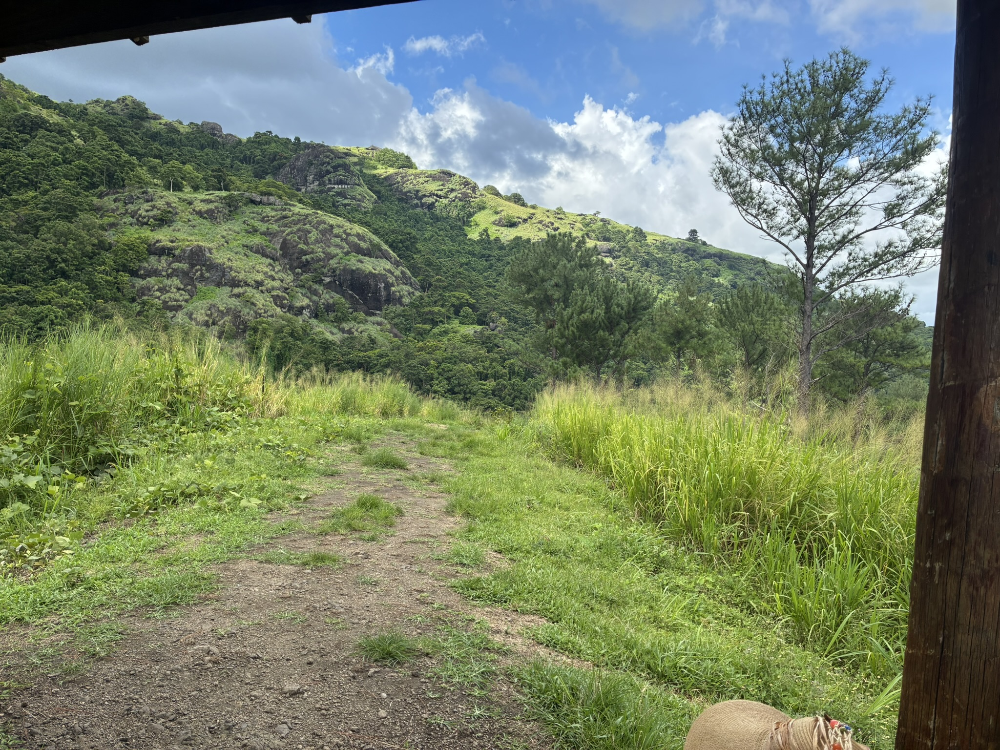

A personal archive / 2024-25
Places worth
remembering.
A small collection of photographs from slow mornings, long roads, and the places that stayed with me.
Browse the albums
A personal archive / 2024-25
A small collection of photographs from slow mornings, long roads, and the places that stayed with me.
Browse the albums